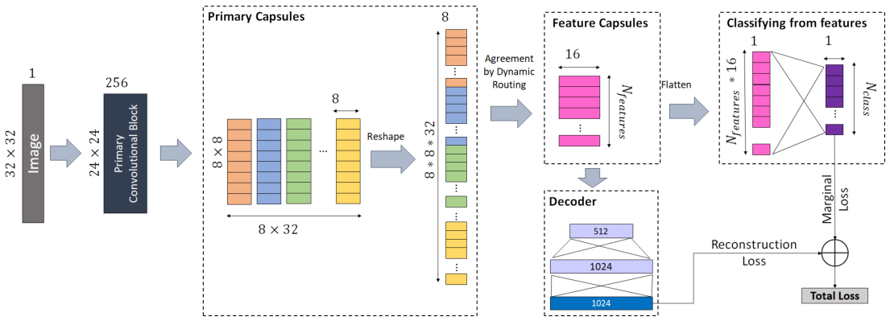

Making capsule networks cope with hundreds of classes
Capsule networks are image classifiers that store each detected feature as a small list of numbers instead of a single value. They were shown to work well on ten-class problems such as digits, but they get slow and memory-hungry when the number of classes grows. We changed what the routing step of the network produces, so that the routing no longer depends on how many classes there are.
The problem
In an ordinary neural network, each unit outputs one number. A capsule outputs a vector, an arrow in a space of 8 or 16 dimensions. The length of the arrow says how likely it is that something is present, and its direction describes how it looks. A capsule network first builds many small primary capsules from convolutions. Then a step called dynamic routing lets these primary capsules vote for the final answer. The votes are weighed again and again during a single forward pass, and a vote counts more when it agrees with the combined answer.
In the original design the final layer holds one 16-dimensional capsule per class. That means the number of routing weights grows in direct proportion to the number of classes. When we tried the network on problems with more classes, it took a lot of time to train, and its accuracy dropped. Earlier work by others had reported the same loss of accuracy on more complicated data. With many classes there are many more relationships between capsules to check, and the network tends to overfit.

The idea
We used dynamic routing for a different job. Instead of producing one capsule per class, the routing step produces a set of feature capsules. Each of them is still a 16-dimensional vector, but it stands for a learned feature, not for a class. The feature capsules are flattened and passed to an ordinary fully connected layer, which turns them into class scores.
Think of describing a person by a few traits instead of keeping a separate checklist for everyone you might meet. Samples can often be described with fewer features than there are classes, and the routing now depends only on the number of features. The decoder, which rebuilds the input image as a regulariser, works from the full set of feature capsules, with no masking.

What we found
We tested on five handwritten data sets from the Indic scripts: Bangla, Devanagari and Telugu numerals (10 classes each), Bangla basic characters (50 classes) and Bangla compound characters (199 classes). We compared against the standard capsule network on a GTX 1080 Ti with 11 GB of memory. The number of feature capsules, Nfeatures, was the main setting we varied.
On the ten-class numerals there was not much change in accuracy (Table V). Training time per epoch (one pass over the training data) dropped, though. For Bangla numerals it went from 11.57 seconds with the standard network to 5.54 seconds with two feature capsules, and to 11.19 seconds with ten (Table VI).
The gains are larger on the bigger problems:
- Bangla basic characters (50 classes): accuracy rose from 90.6% to 93.23% with eight feature capsules (Table X), and the epoch time fell from 120.61 to 25.74 seconds (Table XI).
- Bangla compound characters (199 classes): accuracy rose from 79.34% to 87.44% with six feature capsules (Table X), and the epoch time fell from 1,206.99 to 59.65 seconds (Table XI).
The major speed-up comes from memory, not from faster arithmetic per sample. The standard network needed 2,057 MB per sample on the compound set, while ours needed between 667 and 801 MB, whichever number of feature capsules we used from 2 to 20 (Table VIII). The largest possible batch size grew from 16 to as many as 1,520 images (Table IX), which makes much better use of a GPU's parallel hardware.
Results in more detail
The two larger data sets are where the idea is tested, so we start with accuracy there. In the table below, the first number column is the standard capsule network. Each later column is our network with that many feature capsules. Higher is better. Bangla basic characters has 50 classes and Bangla compound characters has 199.
| Data set | Standard capsule network | 2 features | 4 features | 6 features | 8 features | 10 features | 20 features |
|---|---|---|---|---|---|---|---|
| Bangla basic (50 classes) | 90.6 | 91.07 | 91.73 | 92.7 | 93.23 | 92.1 | 92.1 |
| Bangla compound (199 classes) | 79.34 | 79 | 85.53 | 87.44 | 87.11 | 87.04 | 87.24 |
On the compound characters, two feature capsules gave 79, just under the 79.34 of the standard network. From four feature capsules upward, every setting printed in the table is above it, and the best is 87.44 with six. On the basic characters, every setting is above 90.6, with the best at eight feature capsules (Table X).
Speed is the other half. The next table gives the time for one pass over the training data, with the largest batch size that fits in memory for each model.
| Data set | Standard capsule network | 2 features | 4 features | 6 features | 8 features | 10 features | 20 features |
|---|---|---|---|---|---|---|---|
| Bangla basic (50 classes) | 120.61 | 14.15 | 18.19 | 22.03 | 25.74 | 29.87 | 50.727 |
| Bangla compound (199 classes) | 1206.99 | 36.92 | 47.57 | 59.65 | 70.11 | 81.91 | 149.58 |
Time grows as we add feature capsules, but even with twenty on the compound set one epoch takes 149.58 seconds against 1,206.99 (Table XI). Per single sample the difference is small: 0.0823 seconds for the standard network on the compound set, and between 0.0662 and 0.0699 for ours (Table VII). On the basic characters the standard network needed 1,001 MB per sample and could fit a batch of 70 images, while ours used between 667 and 801 MB and fitted from 172 to 1,520 (Table VIII and Table IX).
Our memory figure hardly changes with the number of classes. The only extra cost is the last fully connected layer. With ten feature capsules it adds 0.006 MiB for the digit data sets, 0.031 MiB for Bangla basic and 0.123 MiB for Bangla compound, which we consider negligible next to the total.
On the three ten-class numeral sets, accuracy is mixed, as we said above. Bangla numerals scored 97.4% with the standard network and between 97.1% and 97.3% with ours. Devanagari numerals scored 94.8% with the standard network, and with ours 92.4% for two feature capsules, 94.8% for four and eight, and 93.3% for ten. Telugu numerals went from 96.2% to 96.9% with two feature capsules, and fell to 95.3% with ten (Table V). The standard network on these sets used 719 MB per sample and a batch of 432 images. Ours used 667 to 719 MB and batches of 432 to 1,520 (Table III and Table IV).
The last table compares our best result for each of the two larger data sets with other published methods.
| Data set | Method | Accuracy |
|---|---|---|
| Bangla basic | Proposed (8 feature capsules) | 93.23 |
| Bangla basic | LeNet | 63 |
| Bangla basic | CapsNet | 90.6 |
| Bangla basic | LeNet+CapsNet | 88.4 |
| Bangla basic | Sarkhel et al. | 86.53 |
| Bangla basic | Bhattacharya et al. | 92.15 |
| Bangla compound | Proposed (6 feature capsules) | 87.44 |
| Bangla compound | LeNet | 75.4 |
| Bangla compound | CapsNet | 79.3 |
| Bangla compound | LeNet+CapsNet | 79.9 |
| Bangla compound | Sarkhel et al. | 86.64 |
In the paper's words, the proposed approach beats the classic capsule networks on several occasions, and the difference is more prominent for problems with a higher number of classes. On compound characters we reached 87.44% against 86.64% for the best earlier method in the list, and on basic characters 93.23% against 92.15% (Table XII). On the numerals the picture is closer: for Bangla digits the paper lists 97.3 for ours and 97.4 for CapsNet, and for Telugu digits 96.9 against 96.2 (Table XII).
Discussion
The concern we started from is that capsule networks scale badly with the number of classes. By using routing to produce feature capsules rather than class capsules, we removed the link between the routing step and the number of classes. Because memory per sample stays almost the same whatever the class count, the same large batch size works across data sets, and a GPU's parallel hardware is used much better. That is where the speed-up comes from.
For the accuracy gain, our explanation is that agreement between capsules gets more complicated when there are many classes, so the standard network tends to overfit. Intermediate features of lower dimension give a more general learning setup, and that shows up as better accuracy on the 50-class and 199-class problems. We conclude that the network beats many other popular works on these Indic data sets.
There are limits. The number of feature capsules should stay below the number of classes, and we saw saturation beyond twenty. We did not use a separate validation set, since the network already has regularisation built in. We kept the model with the best training performance and reported its test accuracy. Because the decoder works from all feature capsules, class-specific reconstruction is not possible, which is one avenue we name for future work. The other is to study the effect of feature capsules on equivariance, which we have not yet done.
The practical result is that a character set with 199 classes took 59.65 seconds per epoch with six feature capsules, where the standard capsule network took 1,206.99 seconds (Table XI).
Sources
The figures and tables listed here are taken from the paper cited at the top of this page; the numbers quoted in the text come from the paper too.
- Figures: Fig. 2, Fig. 3
- Tables: Table III: memory per sample on the numeral data sets; Table IV: largest batch size on the numeral data sets; Table V: accuracy on the three numeral data sets; Table VI: training time per epoch on the numeral data sets; Table VII: training time per sample per epoch on the two larger data sets; Table VIII: memory per sample on the two larger data sets; Table IX: largest batch size on the two larger data sets; Table X: accuracy on the two larger data sets; Table XI: training time per epoch on the two larger data sets; Table XII: comparison with other published methods
Acknowledgements
This work was partially supported by the project order no. SB/S3/EECE/054/2016, dated 25/11/2016, sponsored by SERB (Government of India), and was carried out at the Centre for Microprocessor Application for Training Education and Research, CSE Department, Jadavpur University.
Cite the paper
B Mandal, Swarnendu Ghosh, R Sarkhel, N Das, M Nasipuri (2019). Using dynamic routing to extract intermediate features for developing scalable capsule networks. 2nd International Conference on Advanced Computational and Communication Paradigms (ICACCP), pp. 1–6 · IEEE.
@inproceedings{mandal2019dynamic,
author = {Mandal, B and Ghosh, Swarnendu and Sarkhel, R and Das, N and Nasipuri, M},
title = {Using dynamic routing to extract intermediate features for developing scalable capsule networks},
booktitle = {2nd International Conference on Advanced Computational and Communication Paradigms (ICACCP)},
pages = {1--6},
publisher = {IEEE},
year = {2019},
doi = {10.1109/icaccp.2019.8883020}
}